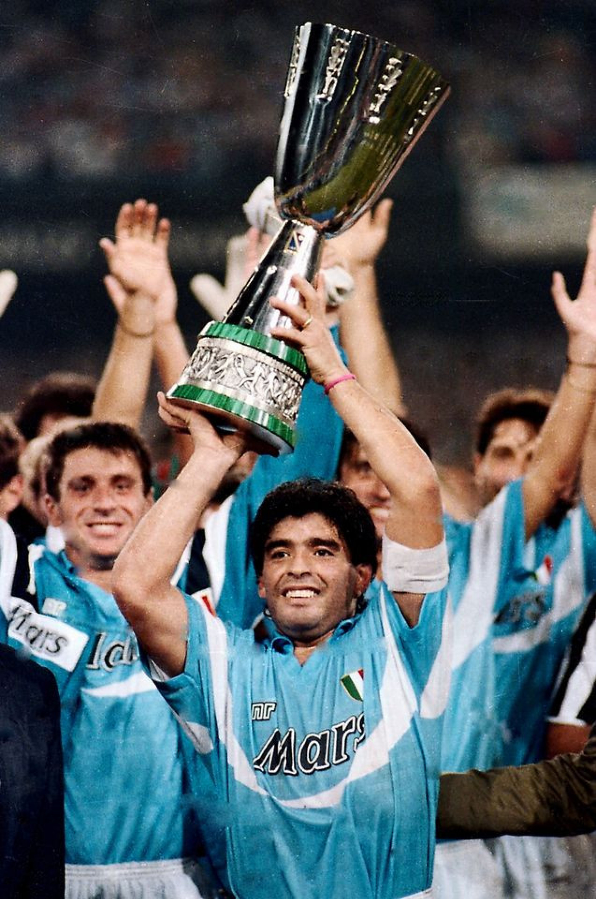
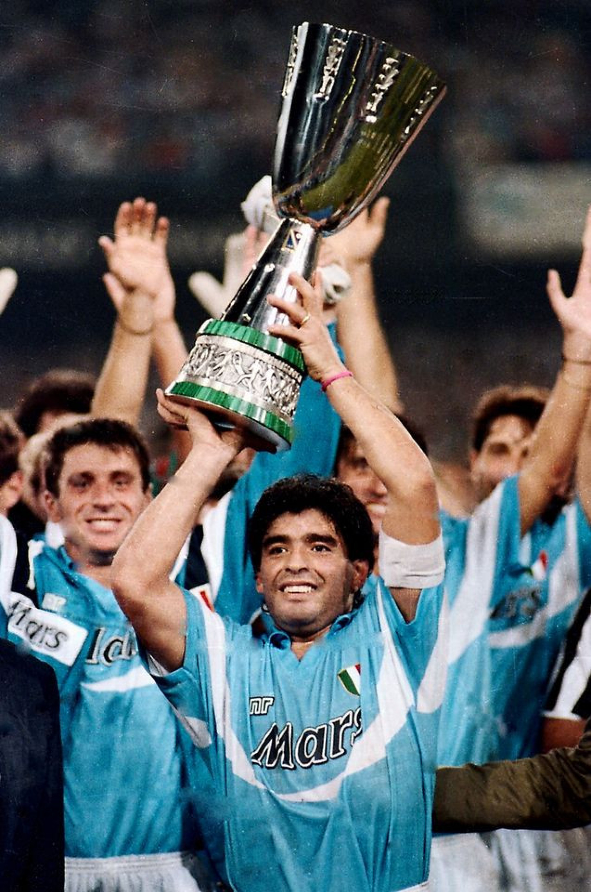
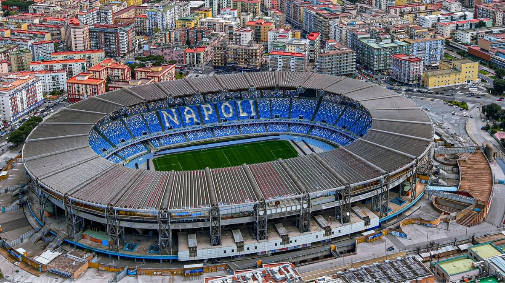

SSC Napoli
SSC Napoli, officially known as Società Sportiva Calcio Napoli, is a professional football club based in Naples, Italy. Founded in 1926, the team has a rich history and is one of the most successful clubs in Italian football. Napoli plays its home matches at the iconic Stadio Diego Armando Maradona, named after the legendary Argentine player who led the club to its first Serie A titles in 1987 and 1990. Known for its passionate fanbase, vibrant style of play, and historic rivalries, Napoli has won numerous domestic and international trophies, including Serie A, the Coppa Italia, and the UEFA Cup.
 

Stadium
The Stadio Diego Armando Maradona, located in Naples, Italy, is the home stadium of SSC Napoli. Opened in 1959, it was originally named Stadio San Paolo but was renamed in 2020 to honor football legend Diego Maradona. The stadium has a capacity of approximately 54,726 seats, making it one of the largest stadiums in Italy.
Trophies and Titles
| Title | Year | Title Number |
|---|---|---|
| Serie B (Second Division Championship) | 1949–50 | 1 |
| Coppa Italia (Italian Cup) | 1962–63 | 1 |
| Coppa Italia (Italian Cup) | 1975–76 | 2 |
| Serie A (Italian League Championship) | 1986–87 | 1 |
| Coppa Italia (Italian Cup) | 1986–87 | 3 |
| UEFA Cup (now UEFA Europa League) | 1988–89 | 1 |
| Serie A (Italian League Championship) | 1990–91 | 2 |
| Supercoppa Italiana (Italian Super Cup) | 1990 | 1 |
| Coppa Italia (Italian Cup) | 2011–12 | 4 |
| Supercoppa Italiana (Italian Super Cup) | 2014 | 2 |
| Coppa Italia (Italian Cup) | 2013–14 | 5 |
| Coppa Italia (Italian Cup) | 2020–21 | 6 |
| Serie A (Italian League Championship) | 2022–23 | 3 |
Napoli won their 3rd Serie A title in the 2022-23 season, their first without Maradona after 33 years. They finished with 90 points (28 wins, 6 draws, 4 losses), led by MVP Victor Osimhen, who scored 26 goals, and Khvicha Kvaratskhelia's key contributions.
Anthem
"O surdato 'nnammurato" is a famous Neapolitan folk song written in 1915. Although it wasn’t originally Napoli’s anthem, it has become closely linked to the club. The song is in the Neapolitan dialect, not Italian.